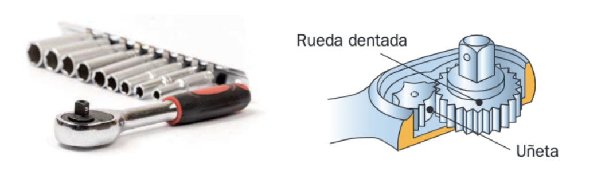
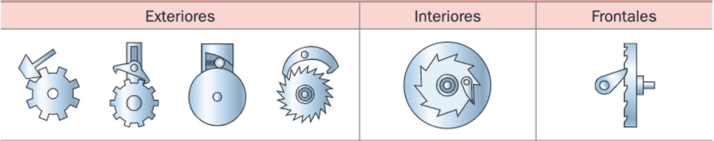

Trinquete
Los trinquetes tienen como misión impedir el giro de un eje en un sentido y permitirlo en el otro. Constan, básicamente, de una rueda dentada y de una uñeta, que se introduce entre los dientes de la rueda por efecto de un muelle o por su propio peso. La uñeta tiene la colocación idónea para impedir el giro en un sentido y permitirlo en el otro.

En algunos casos, como en la llave de la primera figura, la uñeta puede modificar su posición para que el mecanismo sea reversible. Es decir, que bloquee el giro en un sentido o en el otro según queramos.Según la posición de la uñeta respecto de la rueda, los trinquetes pueden ser de tres tipos: exteriores, interiores o frontales:
